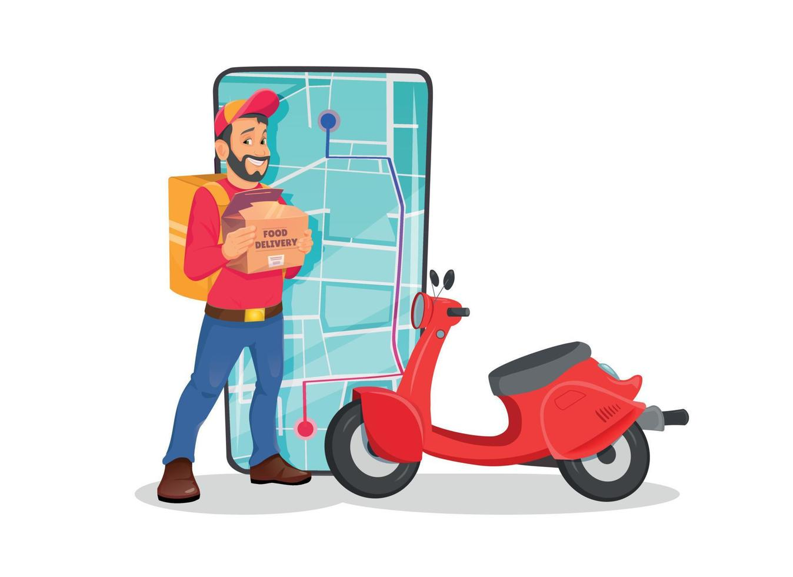
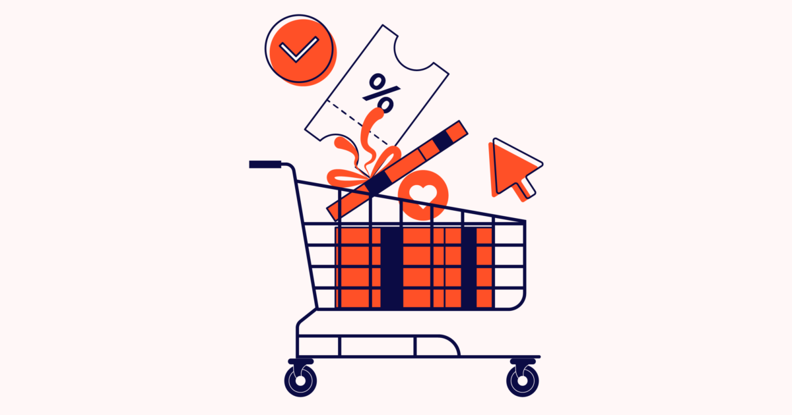

Project Name:Food Delivery Platform

Objective:
The goal of this project is to create a seamless, user-friendly platform where customers can browse, order, and pay for food from a variety of restaurants.
It aims to simplify the ordering process, increase convenience for users, and improve the reach of local restaurants.
Outcomes:
1.A structured, intuitive interface for browsing restaurant menus and placing orders.
2.Real-time order tracking and automated confirmation system for improved user experience.
3.Integration of secure payment options, enhancing customer trust and ease of use.
Project Name:E-Commerce Shopping Cart

Objective:
This project aims to build a comprehensive shopping platform where users can browse products,
add them to their cart, and proceed with a secure checkout process.
It focuses on creating a smooth and personalized shopping experience.
Outcomes:
1.An efficient product catalog with sorting, filtering, and search functionalities to enhance user navigation.
2.A shopping cart system that allows adding, removing, and updating items, helping users manage their selections.
3.A streamlined checkout process with secure payment gateways and order confirmation, ensuring reliability.